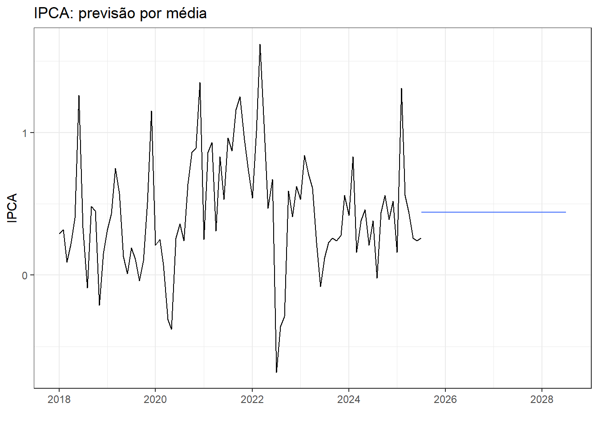
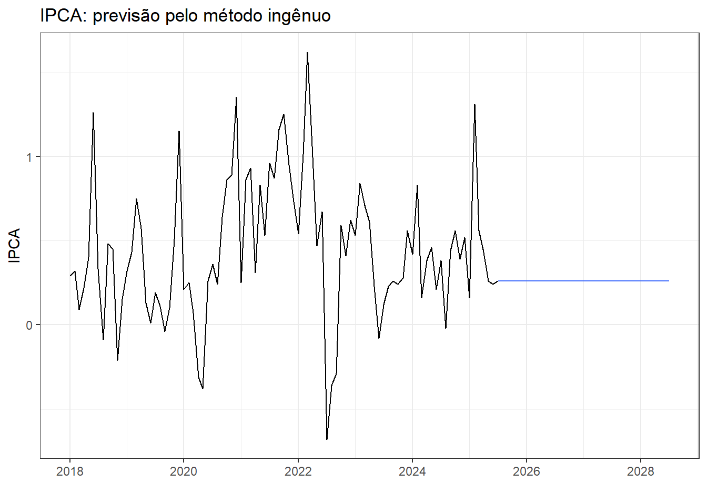
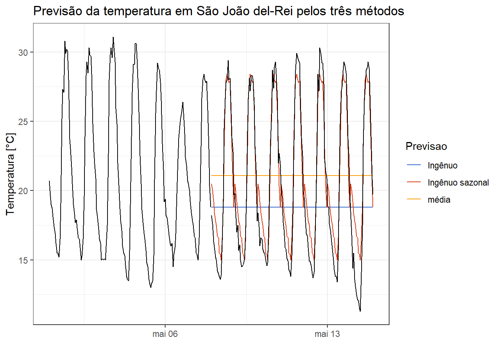
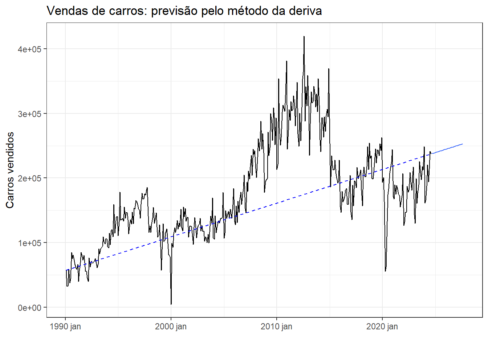
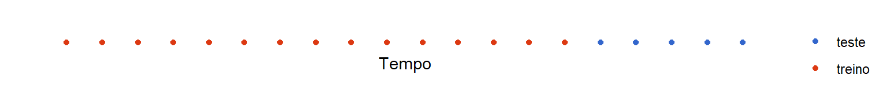

| Tipo | Média | sd |
|---|---|---|
| solar | 4909,736 | 6929,487 |
| termica | 8250,471 | 1886,645 |
| eolica | 10887,856 | 3931,696 |
| hidraulica | 50466,854 | 11061,858 |
2 Análise descritiva, métodos simples de previsão e diagnóstico
2.1 Estatísticas descritivas
Anteriormente à realização da modelagem de séries temporais é importante observar agumas estatísticas simples da série de interesse, de forma a compreender a magnitude da série, tendência central, dispersão e distribuição das observações da série.
2.1.1 Estatísticas simples
Talvez uma primeira forma de avaliar uma série temporal, \(y_1, \dots, y_T\), seria observando os valores de seus momentos de primeira e segunda ordem, ou, em outras palavras, a média, a variância e a autocorrelação. A média consiste no valor esperado da série temporal, conforme a Equação 2.1, sendo estimada, considerando \(T\) observações disponíveis da série, segundo a ?eq-meansample.
\[ \mu = E(y_t). \tag{2.1}\]
\[ \bar y = \frac{\sum_{t=1}^T y_t}{T-1} \]
Já a variância consiste na esperança dos desvios quadráticos em relação à média, segundo a ?eq-varpop, sendo estimada para o caso amostral através da ?eq-vars. Como a variância tem unidade de medida igual ao quadrado da unidade da série original, é comum o uso do desvio-padrão, que consiste na raiz-quadrada da variância, \(s = \sqrt{s^2}\).
\[ \sigma^2 = Var(y_t) = E[(y_t-\mu)^2] \] {eq-varpop}
\[ s^2 = \frac{\sum_{t=1}^T(y_t-\bar y)^2}{T-1} \]
A Tabela 2.1 expõe a média e o desvio-padrão para a série multivariada de energia produzida em MWh no Brasil em 2023, segundo cada fonte. Observa-se a superioridade da série hidráulica em relação às demais, confirmando a dependência desta fonte na matriz energética brasileira. Avaliando o desvio-padrão observa-se que a série de energia térmica apresenta menor dispersão em relação às demais.
A Tabela 2.2 expõe os quartis da mesma série para todas as fontes consideradas. Recordando, os quartis são valores na série que dividem os dados em quatro partes iguais. O primeiro quartil deixa 25% das observações ordenadas abaixo deste, o segundo, também chamado de mediana, consiste no valor intermediário da série, com 50% das observações abaixo e 50% acima. Já o terceiro e último deixa 75% das observações abaixo. Observa-se também o mínimo (0%) e máximo (100%) de cada série.
| Tipo | 0% | 25% | 50% | 75% | 100% |
|---|---|---|---|---|---|
| eolica | 692,913 | 7975,784 | 11133,851 | 13983,090 | 20166,24 |
| hidraulica | 23565,749 | 41825,293 | 50623,416 | 58907,708 | 81006,77 |
| solar | 0,237 | 4,913 | 588,847 | 7368,716 | 27222,57 |
| termica | 4415,886 | 6868,407 | 8269,444 | 9438,016 | 19248,15 |
2.1.2 Autocorrelação
A autocorrelação é uma estatística importante para avaliar padrões de séries temporais, uma vez que consiste na correlação entre distintos segmentos da série temporal (Yule 1926). Para estimar a autocorrelação de uma série, deve-se defasá-la, isto é, atrasá-la em uma ou mais observações, e testar a correlação da série original com a série defasada. Para uma defasagem (lag) de uma observação, \(k= 1\), calcula-se a correlação \(r_1\) entre \(y_t\) e \(y_{t-1}\). Para uma defasagem de duas observações, \(k = 2\), calcula-se a correlação \(r_2\) entre \(y_t\) e \(y_{t-2}\) e assim sucessivamente.
Assim como a correlação consiste na covariância padronizada, a autocorrelção consiste na autocovariância padronizada, sendo de mais fácil interpretação, por ter domínio entre -1 e 1. Tomando uma série \(y_t\) com média nula, \(\mu_y = 0\), para uma defasagem de ordem \(k\), a sua autocorrelação pode ser denotada \(\rho_k\) e consiste na esperança do produto da série e da série defasada, \(\rho_k=E(y_ty_{t-k})\). A autocorrelação amostral para uma defasagem de ordem \(k\) pode ser calculada conforme a Equação 2.2.
\[ r_k = \frac{\sum_{t=k+1}^T (y_t-\bar{y})(y_{t-k}-\bar{y})}{\sum_{t=1}^T (y_t-\bar{y})^2} \tag{2.2}\]
A Tabela 2.3 expõe as dez primeiras observações de uma série temporal arbitrária \(y_t\). A série defasada de uma observação, \(y_{t-1}\), é observada à direita. Nas colunas seguintes são observadas a série com defasagem de duas e três observações, respectivamente. A autocorrelação para defasagem de uma observação, \(r_1\), consiste na correlação entre \(y_t\) e \(y_{t-1}\). A autocorrelação é geralmente calculada para diversas defasagens e o correlograma é um gráfico que plota as autocorrelações, facilitando a interpretação da série.
| tempo | \(y_t\) | \(y_{t-1}\) | \(y_{t-2}\) | \(y_{t-3}\) |
|---|---|---|---|---|
| 1 | 5 | NA | NA | NA |
| 2 | 13 | 5 | NA | NA |
| 3 | 12 | 13 | 5 | NA |
| 4 | 14 | 12 | 13 | 5 |
| 5 | 10 | 14 | 12 | 13 |
| 6 | 16 | 10 | 14 | 12 |
| 7 | 6 | 16 | 10 | 14 |
| 8 | 10 | 6 | 16 | 10 |
| 9 | 12 | 10 | 6 | 16 |
| 10 | 19 | 12 | 10 | 6 |
A Figura 2.1 expõe o diagrama de dispersão da série arbitrária \(y_t\) da Tabela 2.3 e da mesma série defasada de uma observação, \(y_{t-1}\). Observa-se que há uma relação linear positiva entre a série completa e a mesma defasada de uma observação, sugerindo que a série defasada explica boa parte da variação da série original. A autocorrelação mede tal relação.
Seja a série temporal de exportações do Brasil em US$ FOB, disponível em Resultados do Comércio Exterior Brasileiro - Dados Consolidados plotada na Figura 2.2. Observa-se em geral tendência de crescimento com estagnação de 2016 a 2021 devido a crise político-econômica e a pandemia. Também é possível observar um padrão sazonal anual, com maior volume de exportações nos meses de maior atividade econômica em cada ano.
A Figura 2.3 plota o correlograma da série de exportações. As linhas horizontais tracejadas azuis consistem nas linhas que determinam a significância estatística das autocorrelações, de forma que as que estão acima destas, são significativas. Tais limites são calculados como \(\pm 1,96 /\sqrt{T}\), onde \(1,96\) consiste no valor do quantil na distribuição normal-padrão \(z\), com 0,95 de probabilidade ou confiança.
Séries com tendência geralmente apresentam autocorrelação positiva decrescente com o aumento da defasagem. Séries com sazonalidade apresentam autocorrelação alta no período sazonal. Para o caso plotado, pode-se confirmar a presença de tendência e de sazonalidade anual na série.
Na Figura 2.4 são plotadas algumas séries temporais com o correlograma correspondente. A série da Figura 2.4(a) corresponde a um ruído branco (white noise) ou uma sequência de números aleatórios segundo a distribuição normal. Tal série não apresenta autocorrelação significativa, conforme indica o seu correlograma, exibido na Figura 2.4(d). A série da Figura 2.4(b) apresenta padrão cíclico com sazonalidade de 24h. O seu correlograma, plotado na Figura 2.4(e), é característico deste tipo de série, por apresentar correlação positiva decrescente com o aumento da defasagem até ficar negativa com mínimo na defasagem de 12h, metade do período sazonal. Já a série da Figura 2.4(c), com frequência mensal, apresenta tendência linear clara juntamente com sazonalidade anual. O seu correlograma, exibido na Figura 2.4(f), apresenta autocorrelação positiva decrescente com a defasagem, além do padrão cíclico anual, devido aos ciclos de 12 em 12 meses.

2.2 Métodos simples de previsão
Alguns métodos simples de previsão para séries temporais serão expostos com afinalidade de expor a terminologia para previsão, entender o raciocínio necessário para realizar previsões e prover previsões que servem de comparação com resultados de métodos mais sofisticados, os quais serão explicitados nos próximos capítulos.
2.2.1 Média
Seja a série histórica \(y_1, ..., y_T\). Seja \(h\) o número de períodos à frente que se deseja prever. A previsão de séries temporais a partir da média, pode ser útil para algumas séries estacionárias, sendo uma ou mais observações futuras previstas a partir da média das \(T\) observações disponíveis da série. A Equação 2.3 é usada para previsão via média.
\[ \hat{y}_{T+h|T}=\frac{1}{T}\sum_{t=1}^Ty_t=\frac{y_1+y_2+...+y_T}{T} \tag{2.3}\]
Na Figura 2.5 expõe-se a previsão com a média para três anos à frente para a série temporal do IPCA no Brasil.

2.2.2 Método ingênuo
O método ingênuo propõe prever as observações futuras como a última observação disponível Box et al. (2008). A Equação 2.4 é útil para realizar previsões via método ingênuo.
\[ \hat{y}_{T+h|T}=y_T \tag{2.4}\]
Na Figura 2.6 expõe-se a previsão com o método ingênuo para três anos à frente para a série temporal do IPCA no Brasil.

2.2.3 Ingênuo sazonal
O método ingênuo sazonal é indicado para séries claramente sazonais e propõe prever as observações futuras iguais aos períodos das estações anteriores, por exemplo mesmo valor do mês do ano anterior (Makridakis et al. 1982). Na formulação dos valores previstos à seguir, \(m\) consiste no período sazonal e \(k\) é a parte inteira de \((h-1)/m\), ou seja, o número completo de anos do período de previsão antes de \(T+h\). A Equação 2.5 é usada para realizar previsões com o método ingênuo sazonal.
\[ \hat{y}_{T+h|T}=y_{T+h-m(k+1)} \tag{2.5}\]
A Figura 2.7 apresenta a série de temperatura instantânea coletada de hora em hora das duas primeiras semanas de maio de 2024 para a cidade de São joão del-Rei. Foram considerados os dados da primeira semana para treinar os modelos, sendo as previsões plotadas para a semana seguinte juntamente com as observações. pode-se observar que as previsões para o dia 08/05 à frente são exatamente iguais ao observado no dia 07 de maio. As previsões obtidas com o método ingênuo sazonal apresentam bom ajuste aos dados, uma vez que a temperatua desta semana apresentou padrão estável.

2.2.4 Deriva
O método da deriva é uma variação do ingênuo que permite a previsão de observações com tendência de crescimento ou decréscimo segundo a variação observada entre a primeira e última observação (Hyndman e Athanasopoulos 2021). A Equação 2.6 viabiliza a previsão via método da deriva.
\[ \hat{y}_{T+h|T} = y_T + \frac{h}{T-1}\sum_{t=2}^T(y_t-y_{t-1}) =y_T+h \bigg(\frac{y_T-y_1}{T-1}\bigg) \tag{2.6}\]
Na Figura 2.8 aplica-se a previsão com o método da deriva para três dias à frente para a série temporal de produção de carros no Brasil.

2.3 Resíduos e valores ajustados
Os valores ajustados, ou seja, os valores aproximados pelo modelo estimado para as observações da série de interesse, \(y_t\), também referidos como ajustados, são denotados por \(\hat{y}_{t|t-1}\). Tal notação implica que a estimativa de \(y_t\), dita \(\hat y_t\), é baseada nas observações anteriores, \(y_1, ..., y_{t-1}\). É importante diferenciar os valores ajustados dos valores previstos, \(\hat y_{T+h|T}\). Enquanto os primeiros são aqueles aproximados a partir de um modelo para os dados observados da série, \(t=1,\dots,T\), os previstos consistem em observações futuras projetadas para a série em questão para \(h\) períodos à frente.
Os resíduos de uma série temporal consistem no erro, sendo calculados como a diferença entre o observado e o ajustado em cada instante de tempo, \(e_t=y_t-\hat{y}_t\).
Na Tabela 2.4 são explicitados os valores ajustados e os resíduos obtidos com o método ingênuo sazonal para as últimas horas do dia 07 de maio da série temporal de temperatura em São João del-Rei.
| Data | Temperatura | ajustados | resíduos |
|---|---|---|---|
| 2024-05-07 18:00:00 | 27,8 | 26,4 | 1,4 |
| 2024-05-07 19:00:00 | 27,9 | 25,6 | 2,3 |
| 2024-05-07 20:00:00 | 25,8 | 24,1 | 1,7 |
| 2024-05-07 21:00:00 | 23,0 | 22,4 | 0,6 |
| 2024-05-07 22:00:00 | 20,3 | 21,8 | -1,5 |
| 2024-05-07 23:00:00 | 18,8 | 20,7 | -1,9 |
2.3.1 Diagnóstico dos resíduos
Os resíduos de um modelo de série temporal contém informações importantes a respeito da qualidade do modelo estimado. Os resíduos de um modelo de série temporal devem ser:
Não correlacionados.
Com média nula.
Se os resíduos forem correlacionados, eles apresentam informações que deveriam ser incorporadas ao modelo, de forma a melhorar as previsões, implicando que o método usado não foi capaz de descrever toda a informação contida na série e possivelmente há alguum método que resultará em um modelo melhor para a série. Se os resíduos apresentam média diferente de zero, o modelo apresenta um viés. O viés pode ser corrigido subtraindo-o das previsões. Já a autocorrelação entre os resíduos tem correção mais trabalhosa, sendo este tema tratado posteriormente.
É interessante, porém não-obrigatório, que os resíduos sejam:
Homocedásticos, ou seja, que apresentem variâncias iguais.
Normalmente distribuídos.
A homocedasticidade consiste na igualdade de variâncias. Séries com resíduos heterocedásticos podem ser tranformadas, visando obter homocedasticidade e normalidade.
Na Figura 2.9 é plotada a série histórica de 187 observações do índice Ibovespa, para o ano de 2024. A série está disponível em Cotação do índice Ibovespa - Infomoney.

A previsão de índices da bolsa é geralmente feita usando o método ingênuo. Este método considera como valor previsto a última observação disponível. Neste caso os resíduos serão calculados como a diferença da observação atual e a anterior, \(e_t = y_t - \hat{y}_t = y_t - y_{t-1}\). Na Figura 2.10 são plotados os resíduos para tal método. De forma geral estes aparentam apresentar boa distribuição, sem assimetrias e tendência.

Na Figura 2.11 é plotado o histograma dos resíduos, o qual aparenta adequar-se bem à distribuição normal.

Na Figura 2.12 observa-se o correlograma da série do índice Ibovespa. Pode-se observar que a série é autocorrelacionada considerando defasagem de até 22 observações.

Em sequência, na Figura 2.13, plota-se o correlograma dos resíduos do modelo obtido via método ingênuo. Pode-se observar que o método ingênuo resultou em resíduos não correlacionados, de forma que o modelo considera toda a informação disponível nos dados. Obviamente podem haver outros modelos que também garantam a ausência de autocorrelação residual.
2.4 Testes para diagnóstico de autocorrelação
Um teste para diagnóstico de autocorrelação é um teste para averiguar se as \(l\) primeiras autocorrelações são diferentes do que se esperaria para um ruído branco. Um destes testes seria o de Box-Pierce (Box e Pierce 1970), com estatística calculada conforme Equação 2.7. Sugere-se \(l=10\) autocorrelações para séries não sazonais e \(l=2m\) para casos sazonais, onde \(m\) é a dimensão do período sazonal. Porém, o teste não é adequado para \(l\) alto, sugerindo-se no máximo \(l=T/5\).
\[ Q = T\sum_{k=1}^l r_k^2 \tag{2.7}\]
Um teste mais adequado é o de Ljung-Box (Ljung e Box 1978), com estatística calculada conforme Equação 2.8.
\[ Q^* = T(T+2)\sum_{k=1}^l (T-k)^{-1}r_k^2 \tag{2.8}\]
O teste de Ljung-Box é similar ao de Box-Pierce com peso \((T + 2)/(T- k)\) no quadrado da autocorrelação de lag \(k\). Para altos valores de \(T\) ambos os testes reportam resultados muito próximos (Montgomery, Jennings, e Kulahci 2015). A hipótese nula de ambos os testes reside na nulidade de todas as alto correlações. Em ambos os casos um alto valor de \(Q^*\) (ou \(Q\)) sugere que as autocorrelações não vem de um ruído branco. Para decisão, considera-se que \(Q^*\) (ou \(Q\)) segue a distribuição \(\chi^2\) com \(l\) graus de liberdade. O teste de Ljung-Box apresenta poder do teste mais alto, por isso é o mais recomendado.
Na Tabela 2.5 expõe-se o valor \(Q\) e \(Q^*\) para os resíduos do modelo ingênuo para os dados do índice Ibovespa. O p-valor consiste na probabilidade associada à estatística calculada, \(Q\)/\(Q^*\). Como \(Q\)/\(Q^*\) < \(\chi^2_{(df=10, \alpha = 0,05)} = 18,31\) ou como o p-valor > 0,05 = \(\alpha\), para ambos os testes, não se rejeita a hipótese nula. Logo, pode-se concluir que as autocorrelações dos resíduos não diferem das de um ruído branco.
| Teste | estatística | pvalor |
|---|---|---|
| Box-Pierce (Q) | 9,180843 | 0,5150314 |
| Ljung-Box (Q*) | 9,508178 | 0,4846474 |
2.5 Previsão e intervalos de confiança
As previsões via modelos de séries temporais visam projetar para um horizonte futuro de interesse estimativas da série, de forma a viabilizar ações de planejamento. O horizonte de previsão de interesse, também chamado de lead time, \(h\), consiste no número de períodos à frente que deseja-se prever (Montgomery, Jennings, e Kulahci 2015). Obviamente, quanto maior o lead time, maior a incerteza nas previsões. Além da estimativa pontual, pode-se considerar um intervalo de confiança para a previsão com nível de probabilidade ou confiança de interesse. Para, por exemplo, um intervalo de previsão de 0,95 os valores obtidos consistem nos limites que garantem que o valor previsto está entre eles com 0,95 de confiança.
Um intervalo de previsão para \(h\) períodos à frente com 0,95 de confiança pode ser calculado conforme Equação 2.9.
\[ \hat{y}_{T+h|T} \pm1,96 \hat\sigma_h, \tag{2.9}\]
onde \(1,96\) consiste no valor do quantil na distribuição normal-padrão \(z\), com 0,95 de probabilidade ou confiança. Obviamente, caso seja desejado um intervalo com nível de confiança diferente, deve-se selecionar o valor \(z\) adequado.
O desvio-padrão para previsões com \(h=1\) (um período a frente) pode ser calculado como o desvio-padrão dos resíduos, conforme Equação 2.10 onde \(K\) é o número de parâmetros do modelo e \(M\) o número de valores ausentes nos resíduos (para o método ingênuo e o da deriva, por exemplo, \(M=1\), uma vez que a primeira observação não pode ser estimada).
\[ \hat\sigma = \sqrt{\frac{1}{T-K-M}\sum_{t=1}^T e_t^2} \tag{2.10}\]
Para previsões com \(h>1\) a estimativa de \(\sigma_h\) é mais complexa. A Tabela 2.6 expõe as Equações para estimar o desvio-padrão para os métodos até aqui expostos, onde \(m\) é o período sazonal e \(k\) consiste na parte inteira de \((h−1)/m\).
| Método | desvio-padrão para \(h\) previsões |
|---|---|
| Média | \(\hat\sigma_h = \hat\sigma\sqrt{1+1/T}\) |
| Ingênuo | \(\hat\sigma_h = \hat\sigma\sqrt{h}\) |
| Ingênuo sazonal | \(\hat\sigma_h = \hat\sigma\sqrt{k+1}\) |
| Deriva | \(\hat\sigma_h = \hat\sigma\sqrt{h(1+h/(T-1))}\) |
A Figura 2.14 plota a previsão para 10 dias à frente com os intervalos de confiança de 0,80 e 0,95 para o método ingênuo para a série do índice Ibovespa. Observa-se que à medida que o horizonte de previsão aumenta, aumenta-se a incerteza quanto ao valor previsto.

2.6 Transformações
Há diversos casos de séries temporais que seguem um padrão de variação cíclica com amplitude variável com o tempo. Tal variabilidade dita heterocedástica pode dificultar a modelagem da série. Transformações podem ser usadas nas séries temporais, de forma a garantir, por exemplo, que as pressuposições sobre os resíduos sejam cumpridas, ou que alguma variação que aumenta ou cresce com o tempo seja corrigida. A transformação logarítmica é geralmente útil para estabilizar a variação de séries. Tomando a série original, \(y_1, y_2, ..., y_T\), a série transformada fica \(w_1, w_2, ..., w_T\), com \(w_t =log(y_t)\), \(t=1,...,T\). Uma mudança de uma unidade na escala log de base 10 corresponde a uma multiplicação por 10 na escala original.
Outras transformações podem ser mais interessantes em alguns casos, porém nem sempre de fácil interpretação, por exemplo as transformações de potência, \(w_t = y_t^p\). A transformação de Box-Cox envolve ambos logarítmo e potência, conforme Equação 2.11.
\[ w_t = \Bigg\{ \begin{matrix} \text{log}(y_t), \text{ }\lambda=0 \\ \frac{|y_t|^\lambda-1}{\lambda}, \text{ }\lambda>0, \end{matrix} \tag{2.11}\]
onde \(\text{sinal}(y_t) = 1\) se \(y\geq0\) e \(\text{sinal}(y_t) =-1\), caso contrário.
A Figura 2.15 apresenta a série de Exportações após transformação de Box-Cox com \(\lambda = -0,0656\). Pode-se observar que a transformação estabiliza a variância da série. Certamente trabalhar com a série transformada viabilizará obtenção de resíduos mais adequados e de previsões melhores. Ao final é possível isolar \(y_t\) em \(w_t\), de forma a realizar previsões na unidade original da série.
2.7 Avaliação de modelos de séries temporais
Uma avaliação ideal de um modelo de séries temporais deve ser baseada no desempenho do modelo em novos dados e não somente nos valores residuais. Para tal, deve-se considerar dados separados para teste do modelo ou dados futuros. Portanto, não se deve considerar os dados usados para estimar (treinar) o modelo para avaliar seu desempenho.
Conforme visto no caso para dados de temperatura instantânea para São João del-Rei, uma primeira abordagem consiste em simplesmente usar parte inicial da série para treino do modelo e as últimas observações para teste. O percentual de observações usadas para treino/teste depende do número de observações disponíveis na série.
Na Figura 2.16 ilustra-se arbitrariamente a separação das primeiras 75% observações para treino e os 25% restantes para teste.

O erro de previsão (não confundir com resíduo) é calculado conforme Equação 2.12, para \(t=T+1, \dots, T+h\).
\[ e_{t} = y_{t} - \hat{y}_{t} \tag{2.12}\]
O desempenho do modelo pode ser medido por diversas métricas. A Tabela 2.7 apresenta as principais métricas de ajuste. O erro médio absuluto (mean absolute error - MAE) e a raiz da média dos quadrados dos erros (root mean square error - RMSE) são medidos na mesma escala da variável da série. O MAE é menos suscetível a outliers e ambos devem ser minimizados. O erro percentual médio absuluto (mean absolute percentage error - MAPE) tem a vantagem de ser livre de escala, permitindo a comparação de séries distintas.
| Métrica | Fórmula |
|---|---|
| MAE | \(\text{MAE = mean}(|e_t|)\) |
| RMSE | \(\text{RMSE = }\sqrt{\text{mean}(e_t^2)}\) |
| MAPE | \(\text{MAPE = mean}(|p_t|)\), com \(p_t = 100e_t/y_t\) |
| MASE | \(\text{MASE = mean}(|q_j|)\) |
As métricas com o erro padronizado, \(q_j\), são alternativais ao MAPE para comparar desempenho em séries distintas. Elas consideram a escala dos dados de treino para tal. A Equação 2.13 é usada para padronizar os erros. Em séries sazonais substitui-se \(T-1\) por \(T-m\), onde \(m\) é o período sazonal. O erro médio absoluto e escalonado (mean absolute scaled error - MASE) na Tabela 2.8 considera tal padronização.
\[ q_j = \frac{e_j}{\frac{1}{T-1}\sum_{t+2}^T |y_t-y_{t-1}|} \tag{2.13}\]
A Tabela 2.8 expõe o desempenho dos três métodos considerados nos dados de temperatura instantânea de São João-del-Rei. O método ingênuo sazonal para esta série foi o que apresentou melhor ajuste.
| Modelo | RMSE | MAE | MAPE |
|---|---|---|---|
| Ingênuo | 5,92 | 4,98 | 23,72 |
| Ingênuo sazonal | 1,70 | 1,41 | 8,14 |
| média | 5,70 | 5,17 | 27,56 |
2.8 Implementação em R
A seguir apresenta-se parte das implementações na linguagem R para obter os dados, gráficos e análises expostos no presente capítulo. Os dados utilizados estão disponíveis em Previsão, por Robson Bruno Dutra Pereira.
Carregando pacotes.
library(forecast)
library(tsibble)
library(dplyr)
library(tidyr)
library(fabletools)
library(fable)
library(ggplot2)
library(feasts)
library(lubridate)
theme_set(theme_bw())Seja a série de produção de energia no Brasil. O código para obter a série já foi apresentado no capítulo anterior. Para obter a média e desvio-padrão da série multivariada de produção de energia deve-se usar o comando features listando as estatísticas a serem calculadas.
energia_2023_ts |>
features(energia,
list(mean = mean,
sd = sd))Obtenção dos quartis para a mesma série.
energia_2023_ts |>
features(energia, quantile)Leitura da série de exportações no Brasil.
export <- read.csv("exportacoes_BR.csv",
header=T)
exp_ts <- export |>
mutate(date = yearmonth(paste(ano, mes, sep = "-"))) |>
select(!c(ano, mes)) |>
as_tsibble(index = date)A obtenção das autocorrelações é realizada com a função ACF e pode-se definir o número máximo de defasagens com o argumento lag_max.
exp_ts |>
ACF(Exp, lag_max = 100) |>
autoplot()Tomando a série de IPCA a partir de 2018, também apresentada no capítulo anterior, o modelo de média pode ser obtido conforme segue usando a função model que servirá de forma geral para modelagem de séries temporais, independente do modelo e, neste caso, a função MEAN para obtenção do modelo via média.
ipca_fit1 <- ipca_ts |>
filter_index("2018" ~ .) |>
model(mean = MEAN(ipca))A previsão pode ser realizada com o comando forecast. O argumento h serve para definir o número de períodos da previsão.
ipca_pred1 <- ipca_fit1 |>
forecast(h = "3 years")Pode-se observar a série com a previsão com o código a seguir.
ipca_pred1 |>
autoplot(ipca_ts |>
filter_index("2018" ~ .), level = NULL) +
labs(y = "IPCA", x = "",
title="IPCA: previsão por média")Para modelagem via método ingênuo usa-se o comando NAIVE.
IPCA_fit2 <- ipca_ts |>
filter_index("2018" ~ .) |>
fill_gaps() |>
model(naive = NAIVE(ipca))Seja a série temporal de temperatura instantânea de São João del-Rei, também apresentada no capítulo anterior. Sejam os dados dos 14 primeiros dias de maio considerando, com os 7 primeiros separados a seguir para treinar os modelos.
tempo_sjdr_14_dias <- tempo_sjdr_ts |>
filter_index("2024-05-01 00:00:00" ~ "2024-05-14 23:00:00")
train <- tempo_sjdr_14_dias |>
filter_index("2024-05-01 00:00:00" ~ "2024-05-07 23:00:00")É possível realizar a modelagem considerando múltiplos modelos. Seja abaixo a modelagem considerando os métodos da média, ingênuo e ingênuo sazonal, sendo o último obtido via comando SNAIVE.
temp_fit <- train |>
model(
média = MEAN(Temperatura),
Ingênuo = NAIVE(Temperatura),
`Ingênuo sazonal` = SNAIVE(Temperatura)
)A seguir o código para plotar as previsões com a série completa.
temp_fc <- temp_fit |> forecast(h = 7*24)
temp_fc |>
autoplot(tempo_sjdr_14_dias, level = NULL)Valores ajustados e resíduos do método ingênuo sazonal. A coluna .innov resultaria nos resíduos para séries transformadas. Em casos sem transformação, os resultados são idênticos aos da coluna .resid. O comando tail exibe apenas as últimas seis linhas dos resultados.
augment(temp_fit) |>
filter(.model == "Ingênuo sazonal") |>
select(!c(.model, .innov)) |>
tail()A série de produção de carros foi apresentada no capítulo anterior. A modelagem e previsão via método da deriva é obtida conforme segue.
carros_fit4 <- carros_ts |>
model(drift = RW(quantidade ~ drift()))
carros_pred4 <- carros_fit4 |>
forecast(h = "3 years")
# carros_pred4
carros_pred4 |>
autoplot(carros_ts, level = NULL)Série do índice Ibovespa.
ibov <- read.csv("Ibovespa_ InfoMoney_2024.csv",
header = T)
ibov <- ibov |>
mutate(DATA = 1:nrow(ibov)) |>
select(DATA, FECHAMENTO) |>
as_tsibble(index = DATA)
ibov |> autoplot(FECHAMENTO) +
labs(y = "Índice Ibovespa B3 [R$]", x = "",
title="Índice Ibovespa") Modelagem e gráficos dos resíduos para o método ingênuo para a série do índice. A função gg_tsresiduals viabiliza a obtenção de todos os gráficos de resíduos explorados no capítulo.
fit_naive_ibov <- ibov |>
model(NAIVE(FECHAMENTO))
fit_naive_ibov |>
gg_tsresiduals()Testes de Box-pierce e Ljung-Box para os resíduos do método ingênuo para a série do índice ibovespa. Deve-se usar os comandos box_pierce e ljung_box juntamente com o comando features.
aug <- fit_naive_ibov |>
augment()
Q <- aug |>
features(.innov, box_pierce, lag = 10)
Q
Q_ <- aug |>
features(.innov, ljung_box, lag = 10)
Q_Transformação de Box-Cox para a série de exportações. Deve-se usar a opção guerrero no argumento features do comando homônimo para aplicar o algoritmo de Guerrero (1993) para selecionar o lambda ótimo da transformção. Usa-se depois o comando box_cox com o lambda ótimo para transformação.
lambda <- exp_ts |>
features(Exp, features = guerrero) |>
pull(lambda_guerrero)
exp_ts |>
autoplot(box_cox(Exp, lambda)) +
labs(y="",
x="",
title="Exportações com transformação de Box-Cox")Desempenho dos métodos considerados para a série de temperatura de São João del-Rei. O comando accuracy deve ser utilizado, sendo fornecidos as previsões e os dados observados para os dias correspondentes. Pode-se selecionar apenas as métricas de interesse.
last_days <- tempo_sjdr_14_dias |>
filter_index("2024-05-08 00:00:00" ~.)
accuracy(temp_fc, last_days) |>
select(.model, RMSE, MAE, MAPE)2.9 Exercícios propostos
- Obtenha e interprete as estatísticas descritivas simples para a série temporal de volume de carros produzidos no Brasil.
- Faça o correlograma da série temporal de temperatura com defasagem máxima de uma semana. Interprete o padrão de autocorrelação obtido.
- Realize a modelagem com os métodos da média, ingênuo e da deriva para a série do índice Ibovespa, considerando apenas os primeiros 150 dias da série. Obtenha um gráfico com a série filtrada e a previsão para 37 dias à frente com tais métodos.
- Avalie os resíduos para os métodos considerados para a série do índice Ibovespa.
- Faça o teste do modelo com as 37 últimas observações, estimando as métricas de erro MAE, MASE e RMSE e selecione o melhor modelo.